Топор
Топор (Axe) используется для быстрой рубки деревьев и других деревянных блоков: ступеньки из досок, полублоки, верстаки, заборы, сундуки и так далее. Но все это можно добывать и вручную, без топора. Он просто ускоряет работу. Очень хорошо ускоряет, особенно алмазный.
Рецепт: Палка + 3 блока (Доски или Булыжник или Железный слиток или Алмаз или Золотой слиток). Три блока можно расположить вверху с другой стороны.

Материал блока влияет на прочность и иногда - на возможность работы. Деревянный инструмент - самый слабый и быстрее всего ломается. Каменным уже можно работать быстро и долго. Лучше всего алмазные инструменты - они очень прочные и сильные. Золото - слабый материал, но золотые инструменты хорошо зачаровываются.

Топор можно использовать как оружие - сильнее его только меч. Удары топором будут засчитываться как два использования. Топор имеет меньшую скорость атаки чем у меча
Для крафта топора нужно больше материалов, чем для меча, поэтому все-таки для оружия лучше крафтить меч. Хотя в PvP боях у топора есть дополнительный эффект при атаке - "crushing blow" либо "сокрушительный удар", который пробивает щит противника. При этом другой игрок не может использовать щит в течении 6 секунд.
Топор может с одного удара убить кролика, курицу или магмовый куб средних размеров. С одного критического удара - слизня средних размеров.
Топор можно зачаровать для дополнительных эффектов. Боевые эффекты «Остроты», «Бич членистоногих» и «Небесная кара» усиливают его как оружие. Чары "Удача" на топоре бесполезны.
Кирка
Кирка́ (Pickaxe) нужна для добычи камня и руд. Рецепт: Палка + Доски или Булыжник или Железный слиток или Алмаз или Золотой слиток
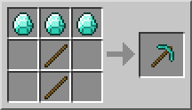
Материал блока влияет на прочность и иногда - на возможность работы. Деревянный инструмент - самый слабый и быстрее всего ломается. Каменным уже можно работать быстро и долго. Лучше всего алмазные инструменты - они очень прочные и сильные. Золото - слабый материал, но золотые инструменты хорошо зачаровываются.
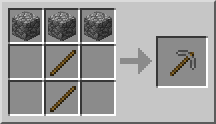
Деревянные кирки не могут добывать железную руду и все более ценные руды. Каменная кирка добывает железную руду, но не может добывать алмазы и изумруды. Стальная кирка может добыть почти все, кроме обсидиана. Алмазная кирка может добывать даже обсидиан, хотя очень медленно.
Кирку можно найти в сундуках в заброшенных шахтах и деревнях. В бонусном сундуке при старте игры может появиться деревянная или каменная кирка.
Кирку можно зачаровать для дополнительных эффектов.
Лопата
Лопата (Spade) сильно ускоряет добычу земли, песка, гравия, глины и снега. Рецепт: Палка + Доски или Булыжник или Железный слиток или Алмаз или Золотой слиток
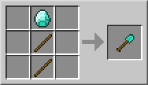
Материал блока влияет на прочность и иногда - на возможность работы. Деревянный инструмент - самый слабый и быстрее всего ломается. Каменным уже можно работать быстро и долго. Лучше всего алмазные инструменты - они очень прочные и быстрые. Золото - слабый материал, но золотые инструменты хорошо зачаровываются.
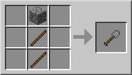
Лопаты необходимы только для сбора снежков из снега, а все остальные блоки можно успешно добыть руками.
Лопату можно скрафтить, либо найти в сундуках в заброшенных шахтах и деревнях.
Лопату можно зачаровать для дополнительных эффектов.
Удочка
Удочка - ценный инструмент, который нужен для рыбалки или притягивания предметов. Рецепт: Нить + Палка

При использовании удочки теряют прочность. Успешная ловля рыбы или предметов тратит одну единицу прочности. Сматывание лески, когда крючок застрял в блоке, тратит две единицы прочности. Сматывание лески, когда крючок застрял в сущности, тратит три единицы прочности. А вот добыча блоков или нанесение удара удочкой не тратит её прочность.
Рыбалка
Используй удочку на любой воде (даже если это выкопанный на огороде колодец). Через какое-то время к поплавку поплывет рыба - её след будет хорошо заметен на больших водоемах. Когда поплавок погрузится в воду - нужно нажать правую кнопку мыши, чтобы поймать рыбу или другой предмет.
На удочку можно поймать рыбу, мусор и сокровища. Они попадают сразу в инвентарь или на панель быстрого использования. Если в инвентаре нет места, добыча упадет под ноги.
Поплавок может погружаться несколько раз, если вы сразу его не вытянете. Если вы не успеете вытянуть леску, пока поплавок не всплыл, то рыба уйдёт с крючка. Каждое нажатие правой кнопки мыши (если крючок выброшен) тратит одну единицу прочности удочки. Если вы рыбачите на мелководье, следите, чтобы крючок не вонзился в берег или дно. Помимо рыбы, можно поймать сокровище или мусор.
Чары
Удочку можно зачаровать на эффект "Морская удача", который повышает ценность добычи на рыбалке. Незачарованная удочка имеет шанс в 85% поймать рыбу, шанс 10% поймать мусор и шанс 5 % поймать сокровище. Каждый уровень чар «Морская удача» снижает шанс поймать мусор на 2,5 %, а также увеличивает шансы ловли сокровища на 1 %. Каждый уровень чар «Приманка» понижает шанс ловли мусора и сокровищ на 1 %. Таким образом лучшая удочка для ловли сокровищ — это удочка с чарами «Морская удача III», для ловли рыбы — «Морская удача III» и «Приманка III», для ловли мусора — удочка без чар.
Притягивание предметов
Удочку можно использовать для притягивания многих сущностей, в том числе лодки и мобов, позволяя использовать удочку также как оружие для борьбы с мобами. Просто закиньте крючок в моба и притяните его.. Урона он не получит, но его можно будет теперь достать мечом. Или сбросить в пропасть или лаву, если между вами есть такое препятствие.
Хрупкие сущности, вроде картин, могут поломаться. Притягивание лодок и вагонеток часто тоже ведёт к их поломке. Также можно нажимать нажимные пластины с расстояния, если прицельно закинуть крючок в пластину.
Мотыга
Мотыга (Hoe) нужна для огорода. Только мотыгой можно превратить обычную землю и траву в грядку.
Рецепт: Палка + Доски или Булыжник или Железный слиток или Алмаз или Золотой слиток. Блоки можно расположить с другой стороны.
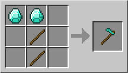
Материал блока влияет на прочность и иногда - на возможность работы. Деревянный инструмент - самый слабый и быстрее всего ломается. Каменным уже можно работать быстро и долго. Лучше всего алмазные инструменты - они очень прочные и сильные. Золото - слабый материал, но золотые инструменты хорошо зачаровываются.
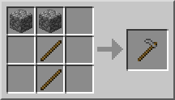
Мотыги из всех материалов вспахивают землю с одинаковой скоростью. Поэтому для кирки достаточно камня, так как она изнашивается медленно, а требуется не очень часто. Но если вы профессиональный фермер и любите вручную обрабатывать грядки - можете скрафтить и алмазную мотыгу, особенно если алмазов много.
Чтобы вспахать блок, нажмите по нему правой кнопкой мыши с мотыгой в руках. Делайте грядки только рядом с водой - иначе на них ничего не вырастет. На них можно выращивать урожай пшеницы, арбузов, тыкв, картофеля, моркови или свёклы.
Мотыгу можно зачаровать на «Прочность» с помощью зачарованной книги.
Мотыга не теряет прочность, если её использовать не по назначению: срубка листвы, добывание дерева, песка и т. д. Она не ускоряет процесс добычи таких блоков и не добавляет урона при атаке, как другие инструменты.
Огниво
Огниво (Flint and Steel) зажигает огонь. С его помощью можно устроить пожар или активировать портал в ад (Нижний мир). Рецепт: Железный слиток + Кремень

После разжигания огня на негорючем блоке огонь через некоторое время исчезает. Это ограничивает возможности в разжигании костра и в уничтожении блоков. Обычно огниво используют для быстрого удаления листвы или деревьев, для освещения тёмных мест и для создания камина из адского камня.
Огниво также наносит урон мобам, но медленно и менее эффективно, чем меч. Огниво может использоваться для активации взрывчатки (ТНТ).
Сейчас огонь в Minecraft имеет смысл только для быстрого освещения или для устройства пожаров. А когда-то, в первых версиях, он использовался вместо печки.
В Краю огонь горит вечно на обсидиане и на коренной породе. Адский камень из Нижнего мира также горит вечно, если его не погасить.
Огниво хватает на 65 использований. Если поджечь свинью, корову или курицу, то из неё выпадет не сырое мясо, а жареное. Находясь в раздатчике, огниво может поджигать блок перед ним.
Поводок
Поводок или лассо (Lead) привязывает животных к заборам. С помощью поводка их также можно водить за собой. Рецепт: Нить + Слизь
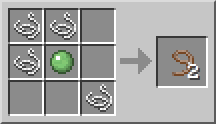
Как использовать: щелчок по большинству животных, включая волков, спрутов и прирученных лошадей, а также по железному или снежному голему привяжет моба к поводку, второй конец которого окажется в руке игрока. При этом поводок «используется» и исчезает из инвентаря. Одновременно можно привязать сколько угодно мобов (если есть поводки).
Ловля животных
С помощью поводка удобнее ловить животных, чем с помощью еды. На поводок можно поймать даже неприрученных оцелотов, и приручить оцелота, сидящего на поводке. Единственный дружелюбный моб, которого нельзя привязать — это летучая мышь.
Чтобы отпустить моба, нужно кликнуть по нему еще раз — поводок выпадет и может быть использован снова. Пока есть привязанные мобы, можно использовать любые предметы, атаковать, ломать и ставить блоки и т. д. Использование на заборе привяжет к нему все поводки, которые игрок сейчас держит в руках. Чтобы отвязать мобов от забора, достаточно ударить по месту, где поводки привязаны к забору. Поводок выпадет, а на заборе останется немного верёвки.
Привязывать лошадей поводком не эффективно, так как через некоторое время поводок оторвется и выпадет рядом с ней. Также поводок может оторваться, если вы ведете животное очень долго, но это происходит редко - реже, чем их уход в сторону, когда вы приманиваете их едой.
Если моб оказывается дальше максимально допустимой длины поводка (5-10 блоков), поводок лопнет и выпадет рядом с мобом. Также это произойдет, если привязанный моб будет убит, или игрок, держащий поводок, перейдет в другое измерение.
Подвешивание
При помощи поводка можно подвешивать мобов. При подвешивании лошади, она может порвать поводок. Если сесть на неё при этом, то поводок лопнет. Со свиньёй такого не происходит.
Если тянуть моба наверх, он может умереть. Если подвесить моба на поводок и взлететь вверх, моб взлетит за вами, а затем начнет падать. Если взлететь на большой скорости, моб взлетит на такой же скорости, но при этом упадет примерно с такой же скоростью.
На поводок нельзя повесить жителя.
Ведро
Ведро (Bucket) необходимо для переноса воды, лавы и молока. Их можно найти в сундуках сокровищниц (вероятность 80%), но проще скрафтить из железа.
Рецепт: Железный слиток (3 штуки)
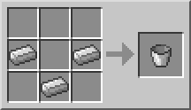
Если применить ведро на корову, то получится ведро с молоком, которое можно использовать как еду (снимает отравление). Из одной коровы можно получить неограниченное количество молока.
Под водой можно зачерпнуть ведром воду и на мгновение создать воздушное пространство, которого хватит, чтобы заполнить легкие. Это позволяет плавать под водой неограниченное время. Чтобы снова использовать ведро, просто вылейте воду.
С помощью двух вёдер воды можно сделать водоем любой площади (вплоть до бесконечности), используя свойство "клонирования" источников воды. Пустые ведра складываются в стопки, однако ведро с водой, лавой или молоком — нет.
С помощью 10 вёдер лавы и ведра воды можно "построить" портал в Нижний мир, не имея обсидиана. Так же можно построить портал с помощью одного ведра, однако рядом должен быть водоем и озеро лавы. Таким образом можно построить портал, не имея в своем распоряжении алмазной кирки, позволяя построить его даже на начальных стадиях игры (достаточно добыть 4 железных слитка и кремень).
Ведро лавы

Ведро лавы можно поместить в печь в качестве топлива. 1 единицы лавы хватает на переплавку 100 единиц других материалов. Время горения – 1000 сек 17 минут).
Лава может использоваться для создания обсидиана, освещения, ловушек или в декоративных целях. Еще из неё можно сделать мусоросжигатель (все брошенные в лаву предметы сгорают). В лаве можно сгореть и самому, так что её лучше размещать в колодце из камня или любого негорючего блока.
Ведро лавы можно использовать как оружие. Если его применить на монстра, убийство практически происходит моментально. Но можно загореться самому, так что лучше иметь рядом воду или выпить зелье огнестойкости.
Из ведра лавы можно сделать источник, который через некоторое время создаст небольшое огненное озеро.
Ведро воды
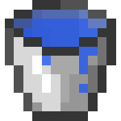
Ведро воды (Water Bucket) позволяет создать источник воды, из которого получается озеро или ручей. Это хорошие средства для замедления мобов.
Также ведро воды − хороший способ защититься от странников Края, выливая воду им под ноги (странник края телепортируется на безопасное расстояние, т.к. они ее боятся).
Воду можно использовать для создания обсидиана, камня, булыжника, или для замедления и удержания дистанции с мобами. Ещё можно создавать фонтаны, лифты, бассейны или быстрые транспортёры вещей. Воду из ведра можно налить в котёл. Чаще всего ведро используют для переноса воды из одного источника к другому, например, из колодца на ферму. Также из воды можно сделать лёд. Для этого нужно поместить блок воды в холодный биом (холодная тайга, холодная равнина и т.п.) или на вершину горы, где через некоторое время источник воды замерзнет. Кстати: если идет снег, то «заморозка» воды пройдет быстрее.
Ещё ведро воды может спасти жизнь в шахтах или в местах с лавой: можно потушиться, погасить большой объем лавы, благодаря этому (при умелом использовании) получая обсидиан, оттолкнуть или скинуть мобов, забраться на расположенный высоко участок, течением вытащить дроп из труднодоступного места.
С помощью ведра воды можно безопасно спускаться с любой высоты. Достаточно вылить воду возле края пропасти, немного подождать, пока вода «разольется», забрать источник воды обратно в ведро и быстро прыгнуть в поток воды. персонаж будет достаточно быстро спускаться вниз. В нижнем мире совершить такое невозможно, ибо вылитая вода мгновенно испаряется. Если во время спуска в игрока выстрелит (или же попросту ударит) враждебный моб, игрок может «выпасть» из потока и разбиться насмерть. Можно не забирать источник воды, и использовать поток для подъёма. Однако подниматься по потоку наверх будет гораздо медленнее и сложнее, чем спускаться вниз.
Компас
Компас (Compass) указывает на место рождения игрока, даже когда лежит в инвентаре, сундуке и на полу. Рецепт: Железный слиток (4 шт) + Красная пыль
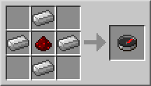
Компас может быть найден с вероятностью 11% в сундуке библиотеки в крепости. Один компас можно купить у жителя-библиотекаря за 10-12 изумрудов.
В Нижнем мире и Крае компас не работает и его стрелка вращается случайным образом.
Из компаса можно скрафтить карту - ещё более полезный инструмент для ориентации в мире Minecraft.
Карта
Карта (Map) показывает игровой мир вокруг игрока. Рецепт: Бумага (8 штук) + Компас
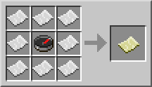
В мобильной версии Minecraft крафтится только из бумаги (9 штук). При этом карта изначально пуста. Чтобы она начала работать, объедините карту с компасом на наковальне (либо в сетке крафта в Windows 10)
Использование карты: игрок может видеть исследованную территорию на карте в руках.
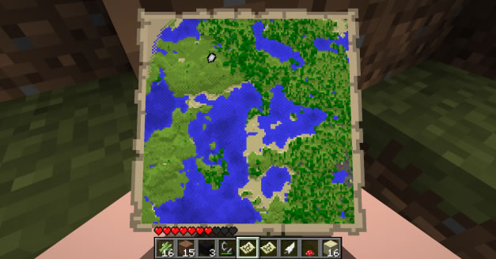
Цвета карты соответствуют цветам элементов в мире, но с некоторыми исключениями. Например, песчаник и золотой блок обращаются в серый, трава в болотном биоме и мицелий грибного острова выглядят зелеными, а гравий имеет на картах желтый цвет.
Если игрок находится за пределами карты, на её границе будет круглая метка, показывающая, в какой он стороне. Если карта находится в рамке, на ней и на всех её дубликатах рамка будет отмечена меткой, похожей на метку игрока, но зеленого цвета.
Обновление карты
Карта будет обновляться только в том случае, если игрок держит её в руках. Обновления карты также привязаны к времени. Это значит, что любые изменения в ландшафте карты, которые произошли за радиусом разведки карты, не будут на ней отображаться до тех пор, пока игрок снова не посетит эту местность. Когда карта находится в руках игрока, она не заслоняет собой область пространства впереди, поскольку находится ниже; чтобы увидеть карту, игроку нужно посмотреть вниз.
Каждая карта обладает тремя основными параметрами:
- Измерение, в котором была создана эта карта. Если карту одного измерения смотреть в другом, она не будет обновляться или отображать игрока.
- Центр, определяется местом создания карты, но часто случаются ошибки.
- Масштаб, определяется количеством уменьшений, которые были выполнены над этой картой.
Как только игрок окажется за границей карты, она перестанет обновляться, и чтобы продолжить нанесение местности на карту ему придется создать новую, уже с другим центром.
Карту можно расширить: крафт карты, окруженной бумагой, даст уменьшенную карту. Она будет иметь тот же центр, но вдвое меньший масштаб. Уменьшенная карта создается неисследованной, даже если на исходной карте что-то было изучено. Уменьшение масштаба одной карты не приведёт к уменьшению масштаба всех её дубликатов.
Особенности
Полоски, появляющиеся при открытии нового участка, являются только графическим эффектом — даже если посмотреть на карту в новой местности и быстро её убрать, через некоторое время она «дорисуется» в фоне. Карта создается чистой. Пустые карты складываются до 64. Для того, чтобы начать исследовать пустую карту, нужно нажать правую кнопку мышки, держа её в руке. Масштаб самой первой карты таков, что она может быть с самого начала изучена полностью.
Карты привязываются к сетке. Центр карты не будет местом ее создания, вместо этого она будет отображать участок с кратными границами, в котором находится игрок.
Если при создании новой карты старая стирается, и не хочет обновляться — нужно перезайти в мир. Такое бывает если первая карта висит в рамке.
Совет: размещайте карту на столбах или обзорных плоскостях. Желательно в разных масштабах.
Клонирование карты
Крафтом исследованной и пустых карт можно получить несколько копий карты. Просто добавьте 1 лист бумаги для 1 копии (8 листов - 8 копий).
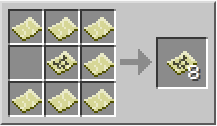
Все экземпляры одной карты содержат одно и то же изображение в любой момент времени -так можно ускорить исследование мира в мультиплеере. Игроки, у которых с собой есть та же карта, будут показаны на ней той же меткой, что и игрок, смотрящий на карту. Одинаковые карты можно складывать в стопки.
Мультиплеер
В мультиплеере карты будут иметь сильный социальный аспект, поскольку их можно будет передать другим игрокам, которые смогут увидеть местность, исследованную составителем карты.[1] Кроме того, с версии 12w34a карты могут быть «клонированы», так что игроки с одинаковыми картами могут объединить результаты своих исследований. Местоположение других игроков с такой же картой также будет отображаться.
Часы
Часы (Clock) показывают расположение солнца или луны в небе. Так можно узнать время, находясь в шахте.
Рецепт: Золотой слиток + Красная пыль
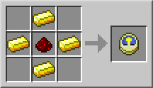
Часы показывают время в руке, в инвентаре, на поясе, если просто лежат на земле, поставлены в рамку или даже на экране статистики.
В Нижнем мире и Краю диск часов будет беспрестанно крутиться то влево, то вправо, так как там не существует времени.
Как определить время
Диск часов разделён на две половины, одна из которых черная, вторая — синяя; это означает ночь и день. Диск равномерно вращается по часовой стрелке на протяжении всего дня, и верхнее его положение — куда указывает стрелка на корпусе — показывает вам, какое сейчас время суток. Положение значков солнца и луны соответствует положению солнца и луны на небе (угол над горизонтом).
Если после сна нажать быстро на инвентарь, то стрелка на часах начнет быстро поворачиваться. Причем она поворачивается слишком далеко, поэтому она немного возвращается обратно. То же происходит и с часами в рамке.
Приколы с часами
Рамка позволяет повесить часы на стену и они будут показывать время. Это будет выглядеть как настенные часы.
Время можно посмотреть не совершая крафта часов, для этого достаточно разложить ингредиенты в верстаке. Появившиеся часы будут показывать текущее время, но после просмотра времени просто закройте верстак не взяв их.
В реальной жизни существуют аналоги таких часов: солнечно-лунные часы, дисковые часы, часы с индикатором дня и ночи...
Ножницы
Ножницы (Shears) позволяют добывать шерсть с овец и грибы с грибной коровы. А еще ими можно собирать блоки листвы, лиан, травы, папоротника, сухих кустов. Если применять ножницы на паутину - получаются нити.
Рецепт: Железный слиток (2 штуки)
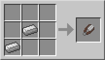
Ножницы лучше подходят для добычи шерсти с овец. Убийство не остриженных овец даёт только один блок шерсти. А на живой овце шерсть отрастает заново, после того, как она "поест" блок травы (сама, накормить её не получится).
Блоки листьев можно составлять в красивые ограды. Листва, установленная игроком, никогда не исчезает, в отличие от листвы на срубленных деревьях.
После стрижки грибных коров те становятся обычными коровами.
Если вы хотите сэкономить красители, то перед стрижкой овец покрасьте их: так вы можете получить за 1 краситель 1-3 блока шерсти такого цвета.
Ножницы можно зачаровать на "Шелковое касание" с помощью зачарованной книги на наковальне для получения блока паутины.
Ножницы можно зачаровать на все зачарования для инструментов при помощи зачарованной книги - на наковальне.
Огненный шар
Огненный шар (Fire Charge) зажигает огонь, как и огниво, но бросить его нельзя. Его можно бросить из раздатчика.
Рецепт: Порох + Огненный порошок + Уголь или Древесный уголь
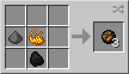
При запуске из раздатчика действует как зажигательный снаряд (как настоящий огненный шар).
При обычном использовании работает как огниво - огонь при этом горит в 2 раза дольше. Но шар исчезает из инвентаря.
Приколы
Огненный шар можно отразить мечом и метнуть в того,кто его запустил. Можно также сделать специальную пушку из динамита и с помощью раздатчика с огненным шаром выстрелить в любом направлении.
Можно полностью скрафтить в аду, если надо будет поджечь портал (порох выпадает из гастов, огненный порошок можно добыть из ифритов, а уголь из скелетов-иссушителей).